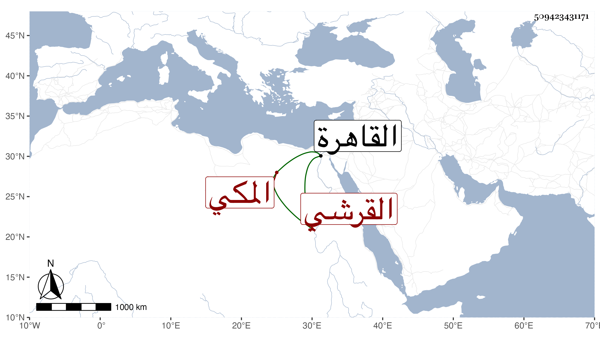

0902Sakhawi.DawLamic.ITO20230111-ara1.EIS1600.509423431171
Biography ID: 509423431171
1074
علي بن أبي البركات محمد بن علي بن أبي البركات محمد بن أبي السعود محمد ابن حسين بن علي بن أحمد بن عطية بن ظهيرة القرشي المكي وأمه أم هانئ ابنة ابن حريز الحسني المصري . ولد في جمادى الأولى سنة إحدى وخمسين وثمانمائة وأجاز له أبو جعفر بن العجمي وغيره ، ودخل مع أمه إلى القاهرة وهو طفل في أوائل سنة خمس وخمسين فمات بها في النصف الأول منها .
